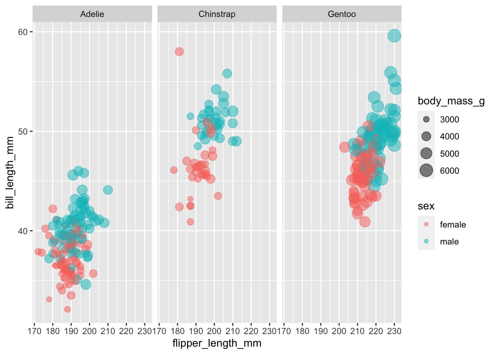
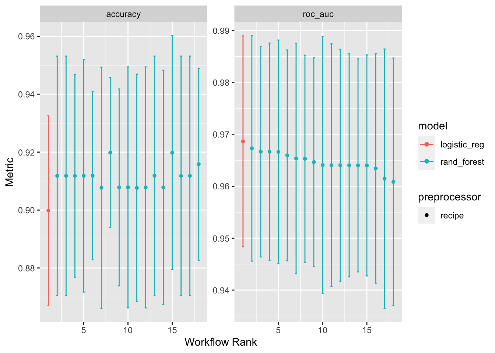

library(here)
library(tidyverse)
library(tidymodels)
tidymodels_prefer()ML Ops with Penguin
Thanks james-h-wade for simplify the whole process. The original material can be found at:
EDA
penguins |>
filter(!is.na(sex)) |>
ggplot(aes(x = flipper_length_mm,
y = bill_length_mm,
color = sex,
size = body_mass_g)) +
geom_point(alpha = 0.5) +
facet_wrap(~species)
Split
# remove rows with missing sex, exclude year and island
penguins_df <-
palmerpenguins::penguins |>
drop_na(sex) |>
select(-year, -island)
# set the seed for reproducibility
set.seed(1234)
# Split the data into train and test sets stratified by sex
penguin_split <- initial_split(penguins_df, strata = sex)
penguin_train <- training(penguin_split)
penguin_test <- testing(penguin_split)
# create folds for cross validation
penguin_folds <- vfold_cv(penguin_train)Recipes
penguin_rec <-
recipe(sex ~ ., data = penguin_train) |>
step_YeoJohnson(all_numeric_predictors()) |>
step_dummy(species) |>
step_normalize(all_numeric_predictors()) Model Spec
# Logistic Regression
glm_spec <-
logistic_reg(penalty = 1) |>
set_engine("glm")
# Random Forest
tree_spec <-
rand_forest(min_n = tune()) |>
set_engine("ranger") |>
set_mode("classification")
# Neural Network with `{torch}` (Not Done)Fit Models & Tune Hyperparameters
Use Bayes optimizaiton for hyperparameter tuning
bayes_control <- control_bayes(no_improve = 10L,
time_limit = 20,
save_pred = TRUE,
verbose = TRUE)# Unix and macOS only
library(doMC)Loading required package: foreach
Attaching package: 'foreach'The following objects are masked from 'package:purrr':
accumulate, whenLoading required package: iteratorsLoading required package: parallelregisterDoMC(cores = 8)workflow_set <-
workflow_set(
preproc = list(penguin_rec),
models = list(glm = glm_spec,
tree = tree_spec)
) |>
workflow_map("tune_bayes",
iter = 50L,
resamples = penguin_folds,
control = bayes_control
)❯ Generating a set of 5 initial parameter results✓ Initialization completei Gaussian process model✓ Gaussian process modeli Generating 34 candidatesi Predicted candidatesi Estimating performance✓ Estimating performancei Gaussian process model✓ Gaussian process modeli Generating 33 candidatesi Predicted candidatesi Estimating performance✓ Estimating performancei Gaussian process model✓ Gaussian process modeli Generating 32 candidatesi Predicted candidatesi Estimating performance✓ Estimating performancei Gaussian process model✓ Gaussian process modeli Generating 31 candidatesi Predicted candidatesi Estimating performance✓ Estimating performancei Gaussian process model✓ Gaussian process modeli Generating 30 candidatesi Predicted candidatesi Estimating performance✓ Estimating performancei Gaussian process model✓ Gaussian process modeli Generating 29 candidatesi Predicted candidatesi Estimating performance✓ Estimating performancei Gaussian process model✓ Gaussian process modeli Generating 28 candidatesi Predicted candidatesi Estimating performance✓ Estimating performancei Gaussian process model✓ Gaussian process modeli Generating 27 candidatesi Predicted candidatesi Estimating performance✓ Estimating performancei Gaussian process model✓ Gaussian process modeli Generating 26 candidatesi Predicted candidatesi Estimating performance✓ Estimating performancei Gaussian process model✓ Gaussian process modeli Generating 25 candidatesi Predicted candidatesi Estimating performance✓ Estimating performancei Gaussian process model✓ Gaussian process modeli Generating 24 candidatesi Predicted candidatesi Estimating performance✓ Estimating performancei Gaussian process model✓ Gaussian process modeli Generating 23 candidatesi Predicted candidatesi Estimating performance✓ Estimating performance! No improvement for 10 iterations; returning current results.class(workflow_set)[1] "workflow_set" "tbl_df" "tbl" "data.frame" workflow_set# A workflow set/tibble: 2 × 4
wflow_id info option result
<chr> <list> <list> <list>
1 recipe_glm <tibble [1 × 4]> <opts[3]> <rsmp[+]>
2 recipe_tree <tibble [1 × 4]> <opts[3]> <tune[+]>Compare Model Results
Tabular view
# create table of best models defined using roc_auc metric
rank_results(workflow_set,
rank_metric = "roc_auc",
select_best = TRUE)# A tibble: 4 × 9
wflow_id .config .metric mean std_err n preprocessor model rank
<chr> <chr> <chr> <dbl> <dbl> <int> <chr> <chr> <int>
1 recipe_glm Preprocessor… accura… 0.900 0.0199 10 recipe logi… 1
2 recipe_glm Preprocessor… roc_auc 0.969 0.0123 10 recipe logi… 1
3 recipe_tree Iter2 accura… 0.912 0.0251 10 recipe rand… 2
4 recipe_tree Iter2 roc_auc 0.967 0.0132 10 recipe rand… 2Plotting performance
autoplot(workflow_set)
Finalize
Select best model
best_model_id <- "recipe_glm"
best_fit <-
workflow_set |>
extract_workflow_set_result(best_model_id) |>
select_best(metric = "accuracy")
best_fit# A tibble: 1 × 1
.config
<chr>
1 Preprocessor1_Model1Final Fit
# create workflow for best model
final_workflow <-
workflow_set |>
extract_workflow(best_model_id) |>
finalize_workflow(best_fit)
# fit final model with all data
final_fit <-
final_workflow |>
last_fit(penguin_split)Final Metric
# show model performance
collect_metrics(final_fit)# A tibble: 2 × 4
.metric .estimator .estimate .config
<chr> <chr> <dbl> <chr>
1 accuracy binary 0.905 Preprocessor1_Model1
2 roc_auc binary 0.971 Preprocessor1_Model1collect_predictions(final_fit) |>
roc_curve(sex, .pred_female) |>
autoplot()